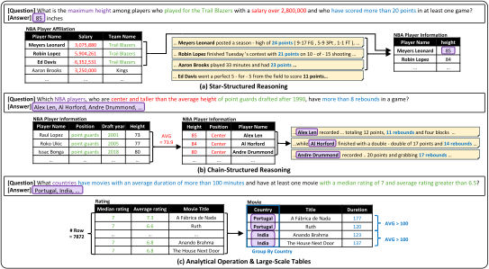
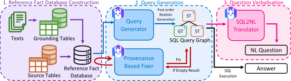
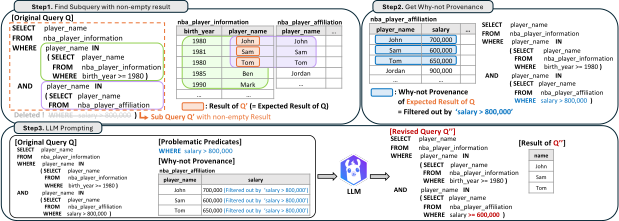
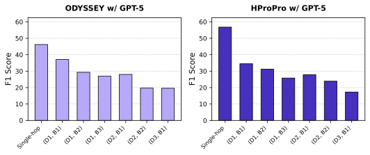
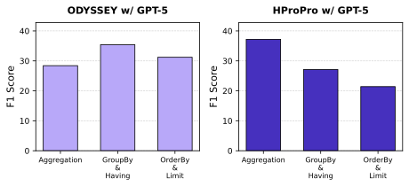
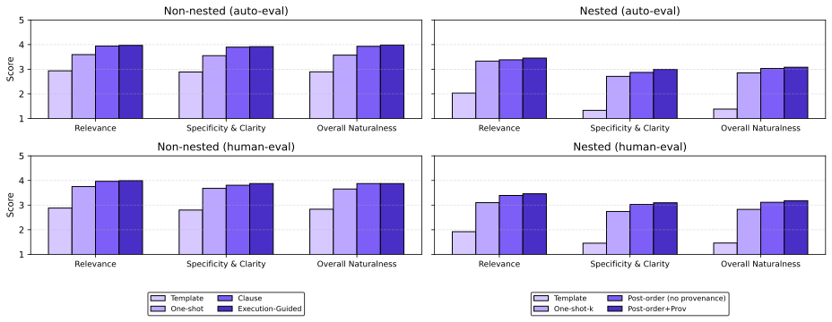
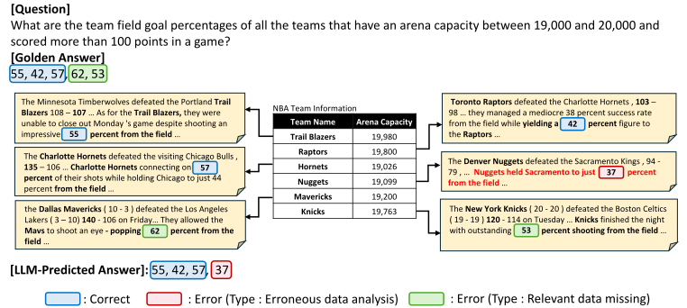

SPARTA: Scalable and Principled Benchmark of Tree-Structured Multi-hop QA over Text and Tables
About SPARTA
SPARTA is a scalable and principled benchmark framework for tree-structured multi-hop question answering (QA) over text and tables. It provides thousands of high-fidelity question-answer pairs derived from real-world relational databases across diverse domains, including NBA statistics, movies, and medical records. Unlike previous benchmarks that rely on small-scale "toy" tables, SPARTA utilizes extensive databases containing thousands of rows and complex schemas, reflecting realistic data environments. This challenge requires models to navigate intricate tree-structured reasoning paths and execute advanced analytical operations—such as aggregations, grouping (GROUP BY/HAVING), and nested SQL queries (Types N, A, J, and JA)—across heterogeneous data modalities. By exposing the limitations of current systems, which experience performance drops of over 30 F1 points, SPARTA sets a rigorous new standard for evaluating deep cross-modal reasoning.
Why SPARTA?
In recent years, benchmarks like HybridQA and OTT-QA have pioneered Table-Text QA. However, their reliance on manual curation has led to fundamental limitations: shallow reasoning, high annotation noise, and toy-scale data environments.
As LLMs evolve to handle increasingly complex analytical tasks, we present SPARTA, a scalable and principled framework designed to advance cross-modal reasoning through automated, high-fidelity benchmark construction.
SPARTA redefines the standards of Table-Text QA with three core advancements:
- Real-World Scale: We move beyond tiny web tables (averaging 15 rows) to enterprise-scale environments, featuring relational data with up to thousands of rows across diverse domains.
- Tree-Structured Multi-Hop Reasoning: Unlike existing benchmarks limited to linear, shallow chains, SPARTA synthesizes complex queries requiring tree-structured reasoning, including advanced operations like aggregation and grouping.
- High Fidelity & Reliability: By replacing error-prone manual labeling (which has up to a 21% error rate) with provenance-based refinement, SPARTA ensures executable, natural-sounding, and noise-free benchmarks at 4x the construction efficiency.
The challenge is significant: even state-of-the-art LLMs experience a performance drop of over 30 F1 points on SPARTA compared to previous benchmarks, highlighting the critical need for more robust and scalable evaluation.

Figure 1: Representative examples from the SPARTA benchmark showing multi-hop reasoning across tables and text with varying query structures.
Examples from SPARTA Benchmark
Key Contributions
Reference Fact Database
Unifies heterogeneous evidence (tables + text) inside a single relational store, making all facts uniformly queryable via SQL.
Provenance-Based Refinement
Uses "why-not provenance" to identify and fix overly selective predicates, ensuring every generated query returns valid results.
Realistic-Structure Enforcement
Constrains generation to post-order traversal of query graphs, producing human-like SQL that mirrors how analysts actually write queries.
Quality-Assured Generation
Achieves 0% annotation error rate over 100 sampled queries with lightweight human validation, compared to 21-30% error rates in existing benchmarks.
Method Overview

Figure 2: Overview of SPARTA pipeline: (1) Reference Fact Database Construction, (2) Query Generation, (3) Question Verbalisation.
Reference Fact Database Construction
SPARTA unifies all evidence—structured and unstructured—into a single relational store called the reference fact database. Textual facts are decomposed into atomic propositions and stored as tuples, making them directly addressable via SQL alongside structured data.
Query Generation with Provenance-Based Refinement
An LLM generates SQL queries with controlled hop counts. Two safeguards ensure quality: provenance-based refinement fixes empty-result queries using "why-not" analysis, and realistic-structure enforcement follows post-order traversal for human-like SQL.
Question Verbalisation
Each validated SQL query is converted to fluent natural language using AST-ICL, a state-of-the-art SQL-to-text model. Lightweight human validation ensures correctness with 75% less annotation time than traditional methods.
Provenance-Based Refinement
Our novel technique that identifies and fixes overly selective predicates using database provenance

Figure 3: Provenance-based refinement process. When a query returns empty results, the system traces the failure using "why-not provenance", identifies the blocking predicate, and guides the LLM to relax overly restrictive conditions.
Experimental Results
State-of-the-art models experience dramatic performance drops on SPARTA:
ODYSSEY drops from 69.5 F1 (HybridQA) to 35.6 F1 (SPARTA)
HProPro drops from 70.5 F1 (HybridQA) to 40.4 F1 (SPARTA)

Figure 4: F1 scores across query tree configurations. Performance degrades as depth and breadth increase.

Figure 5: F1 scores across analytical operations. Models struggle with GROUP BY, ORDER BY, and aggregation.

Figure 6: Query naturalness evaluation comparing different generation methods. Our execution-guided approach with post-order traversal achieves the highest naturalness scores.
Case Study

Figure 7: Case study illustrating typical failure modes of current Table-Text QA models on SPARTA benchmark questions.
BibTeX
@inproceedings{sparta2025,
title={SPARTA: Scalable and Principled Benchmark of Tree-Structured Multi-hop QA over Text and Tables},
author={Anonymous},
booktitle={Under Review},
year={2025}
}